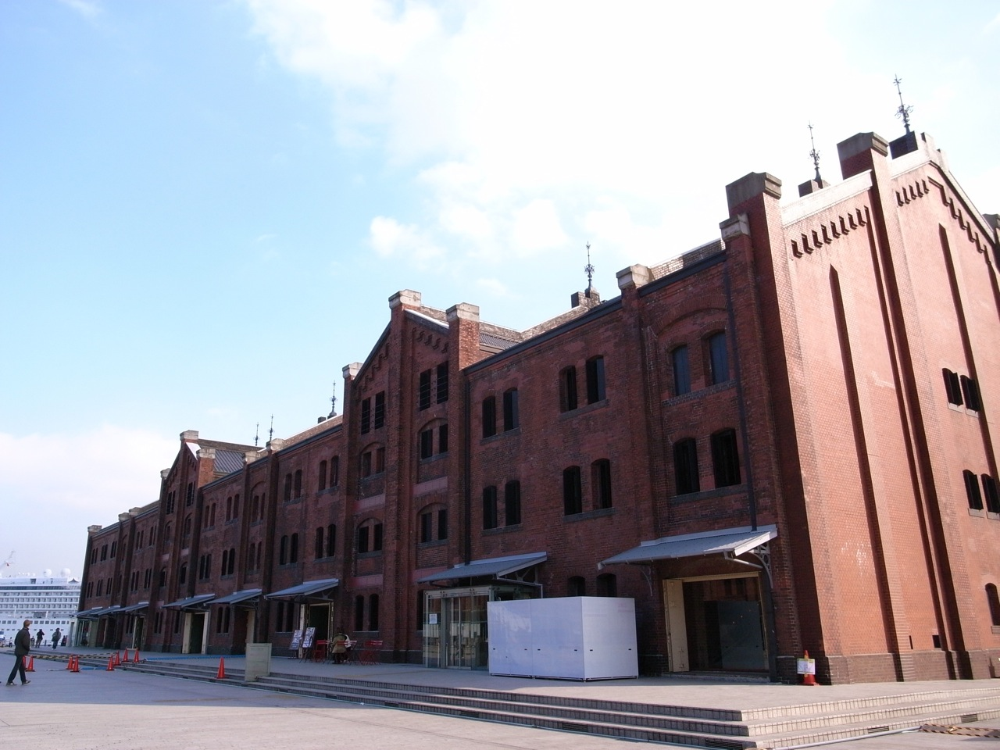

写真：Volfgang / Wikimedia Commons (CC BY-SA 3.0)
第1位・定番スポット
横浜赤レンガ倉庫
横浜デートの王道として外せないのが、明治・大正時代の歴史的建造物を活かした「横浜赤レンガ倉庫」。館内にはおしゃれな雑貨ショップや限定スイーツ、海を望むレストラン＆カフェが並び、季節ごとのフードフェスやライトアップイベントも充実しています。夕方から夜にかけてのオレンジ色に照らされた外観は、二人の記念撮影にもぴったりのロマンチックな空間です。
・アクセス：みなとみらい線「馬車道駅」「日本大通り駅」徒歩約6分／JR「桜木町駅」徒歩約15分
・営業時間：1号館 10:00〜19:00／2号館 11:00〜20:00（※店舗により異なる）